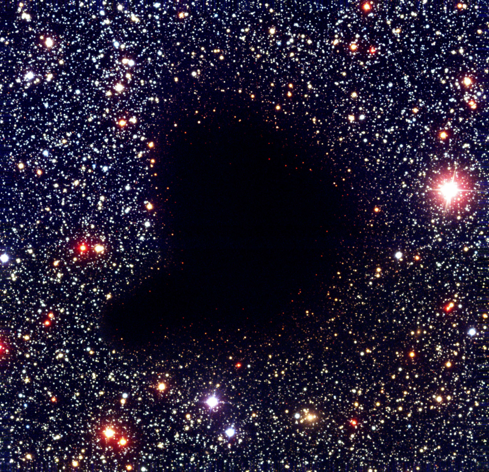

Materials: Jeans 1902, Offner et al. 2023, Ch. 1, A dirty window, Magnani & Shore, Ch 6.8.1 "Tapestry of Modern Astrophysics" by S. N. Shore, Ch. 26 in Kippenhahn's book, Ch. 9 in Onno Pols' lecture notes, Ch. Tauris & van den Heuvel 2023 book.
How do stars (& planets) form?
We have seen that stellar evolution is the product of the competition between self-gravity and the pressure gradient of the hydrostatic stellar gas, which requires high temperatures in the innermost regions, causing thermonuclear burning and chemical evolution on a nuclear timescale. Here, we will look a bit more at how this begins.
N.B.: The physical processes governing planet formation are the same as for stars, especially when considering the formation of multiple stellar systems where irradiation from external sources can play a role. What can be different is the \(T\) and \(\rho\) regime of matter, which impacts the EOS, the opacities, and the astro-chemistry.
The aim of a comprehensive theory of star formation is to explain the distribution of orbital architectures across masses from planets to super-massive stars, and metallicities. This aim has not yet been achieved by the scientific community, and questions related to star formation remain some of the most important unanswered questions of astrophysics:
- Given initial properties of a gas cloud, what fraction of its mass will end up in stars (star formation efficiency)?
- What distribution of stellar-masses (Initial mass function) and orbital architectures will come out?
In the absence of a comprehensive predictive theory, these are informed by observations.
N.B.: In general, the rate of formation of stars is a function of both the mass of the star \(M\) and the time \(t\), \(\Psi\equiv\Psi(M, t)\). It is a common assumption, dating back to Salpeter 1955 to assume that the variables are separable, meaning one can write the star formation mass- and time-dependent rate as \(\Psi = IMF(M) \times SFR(t)\) defining an initial mass function \(IMF\) dependent only on the mass and a star formation rate \(SFR\) dependent only on time. Given the success of this heuristic hypothesis that simplifies greatly the math, we continue to use it without a strong first-principle justification.
The Beginning: Giant Molecular Clouds

Consider a cold cloud of a given initial homogeneous composition, typically \(\sim70\%\) by mass will be hydrogen (H), \(\sim28\%\) helium (He), and the rest as metals. At this point, in absence of external energy sources (e.g., radiation from a nearby cluster or AGN), the gas will be cold (\(T\simeq10-100\,\mathrm{K}\)), and hydrogen atoms will collisionally find each other and form molecules of H₂. This is a (giant) molecular cloud (GMC).
N.B.: The notation can be confusing: H₂ is molecular hydrogen, H\({\rm II}\) is ionized hydrogen (i.e., just the proton).
These have typical densities of \(n\gtrsim 100 \mathrm{cm^{-3}}^{}\), that is 100× or more the typical density of the interstellar medium (ISM): such a structure could in principle plow through the ISM like a bullet through fog. Despite most of the mass being molecular hydrogen, there are other tracers (typically CO molecules) used to find these, and molecular and atomic H and CO do not necessarily trace each other.
From a radiative perspective, matter will also contain a small fraction of dust, leading to a very high opacity in the optical wavelengths (see figure above). However, IR radiation can leak out of the cloud, initially allowing for efficient cooling.
Jeans Mass
Let's assume, following Jeans 1902, an infinite homogeneous cloud that is isothermal. This simplification allows us to use a very simple polytropic EOS:
with a constant sound speed \(c_{s}\) to describe the gas pressure, and therefore we don't need an energy transport equation to describe the cloud (recall the first lecture on EOSs). Besides the gas pressure, the other key player here is gravity. Our aim is to understand how the gas in the cloud can respond to small external perturbations.
Intuitive arguments
To build intuition, we can compare the free-fall timescale (recall the hydrostatic equilibrium lecture) to the sound-crossing time across a certain length-scale \(\ell\), and find the length-scale \(\ell_{J}\) for which the two are the same:
where we neglect factors of order unity coming from the details of the geometry. This is the Jeans length \(\ell_{J}\).
Consider now a small perturbation to the cloud, caused for example by a supernova explosion outside the cloud hitting it, or winds from massive stars (these are typical triggers of the collapse and formation of new stars). Perturbations with longer length scales (or wave number \(k\le2\pi/\ell_{J}\)) will involve enough mass that the competition between gas pressure and gravity is won by the latter, and a collapse will ensue. Viceversa, for perturbations with smaller length scale are stable: the increase in gas pressure due to the perturbation will restore equilibrium.
Another intuitive derivation can be obtained comparing the gravitational potential energy and the internal energy of the cloud: collapse requires a negative total energy, or in other words
where we neglect on the last r.h.s. a factor of numbers of degrees of freedom divided by two (so either 3/2 or 5/2 for di-atomic molecules). Rearranging and using \(R\propto M^{1/3}/\rho\), we obtain that the collapse condition can be expressed in terms of mass as:
which says that denser cold gas has a lower minimum mass threshold to collapse, as one may expect.
N.B.: For an ideal gas \(c_{s} \propto\sqrt{T/\mu}\), substituting in the estimate for the Jeans length \(\ell_{J}\) we can see that \(M_{J}\sim\rho\ell_{J}^{3}\) gives the scaling of Eq. \ref{eq:jeans_mass_scaling} and only misses factors of order unity which depend on the details of the geometry of the mass distribution.
Formal derivation
The cloud is described by the momentum continuity equation (or Euler's equation), the mass continuity equation, and its gravitational potential \(\Phi\) has to solve the Poisson's equation:
These equations describe our isothermal patch of gas, where gas is allowed to have a velocity \(\mathbf{v}\) and we do not neglect time dependencies.
We can formally introduce a perturbation by substituting in Eq. \ref{eq:cloud} \(\rho\rightarrow\rho_{0}+\delta\rho\), \(\Phi\rightarrow\Phi_{0}+\delta\Phi\), \(\mathbf{v}\rightarrow\mathbf{v_{0}}+\delta \mathbf{v}\) and keeping only the first-order terms in \(\delta \rho\), \(\delta \Phi\), and/or \(\delta \mathbf{v}\). The terms with subscript \(0\) are solutions of the unperturbed equations, let's assume to start from a static situation with \(\mathbf{v_{0}} \equiv 0\). With the linearized equations one obtains, without loss of generality, we can consider perturbations of the form
for \(x=\{\rho, \Phi,\mathbf{v}\}\), with \(x_{0}\) solution of the unperturbed equations. An arbitrary \(\delta x\) can be represented as the linear superposition of perturbations of this form (thanks to the fact that we only keep the linear order in the perturbation).
This reduces Eq. \ref{eq:cloud} to, respectively:
which is a system of homogeneous linear equations for \(\delta\rho, \delta\mathbf{v}\), and \(\delta\Phi\), which has solution only if the determinant of the matrix representing the system is zero. This condition provides the dispersion relation:
For large \(k\), corresponding to small length scale perturbations (recall \(k=2\pi/\ell\)), the l.h.s. is positive and the cloud of gas is stable: this is the situation for small perturbations where the increase in gas pressure due to compression counteracts gravity effectively. Viceversa, for small \(k\), that is large length scales \(\ell\ge\ell_{J} = c_{s}/\sqrt{4\pi G\rho_{0}}\) the pressure increase corresponding to the compression is too small to effectively counteract gravity and we have a collapse.
N.B.: The formal derivation got us a factor of \(\sqrt{4\pi}\) in the definition of Jeans length.
Thinking in terms of length scale is useful when doing perturbation theory because it can help visualizing the perturbation, but astrophysically it is more useful to think in terms of mass involved. We can define the Jeans mass as the mass contained within a sphere of volume the Jeans length:
Substituting \(\ell_{J}\), and recalling that \(c_{s}\propto\sqrt{T_{0}/\mu}\) where \(T_{0}\) is the initial gas temperature (only the unperturbed value at linear order) and \(\mu\) its mean molecular weight, we have the scaling \(M_{J}\propto \rho_{0}^{-1/2} T_{0}^{3/2}\mu^{-3/2}\). Plugging in typical numbers we have:
Note how this value is much larger than the typical mass of stars in the local universe.
Initial collapse and fragmentation
We have derived a minimum length scale \(\ell_{J}\) or mass scale \(M_{J}\) for a perturbation to drive a runaway gravitational collapse in a homogeneous and isothermal gas distribution. How does this collapse proceed?
By construction, we have derived that the collapse initiates when the perturbation induces a local increase in gravity that wins over the increase in gas pressure, so we expect a dynamical phase. Considering the (order of magnitude of the ) free-fall timescale, we have:
where we know \(\tau_{\rm ff,☉}\simeq 1\) hour. Using \(\langle\rho_{☉}\rangle\sim1\) g cm-3 and \(\langle\rho_{\rm GMC}\rangle\simeq n\mu m_{p}\) and assuming a number density of particles \(n\sim100\) cm-3 and \(\mu\sim1\), this gives the free fall timescale of the giant molecular cloud
This is a long timescale because of the low density (as the collapse proceeds, the density of the cloud increases and this timescale shortens), but how does it compare to the thermal timescale of the cloud? This question is central, since so far we have assumed the cloud to remain isothermal, so any excess energy has to be redistributed much faster than the timescale for the collapse \(\tau_{\rm ff, GMC}\).
To estimate the thermal timescale, consider that the cloud is optically thin to infra-red radiation, thus the thermal timescale can be estimated as \(\tau_{\rm th, GMC}=E_{\rm int}/\Lambda\) with \(E_{\rm int}\simeq \int dm c_{v}T\) the internal thermal energy of the gas, and \(\Lambda\) the radiative energy losses, which can be estimated to be \(\Lambda\sim 1\) erg g-1 s1. This typically gives \(\tau_{\rm th, GMC} \le 100\) years \(\ll\tau_{\rm ff, GMC}}\), which justifies a posteriori our assumption of isothermal collapse.
N.B.: A proper calculation of the cooling rate \(\Lambda\) requires detailed plasma physics consideration, see e.g., Spitzer 1968 book.
N.B.: During the initial collapse of a GMC, we have a dynamical phase, but contrary to the case of a star in gravothermal equilibrium, and owing to the low initial densities, in this phase the dynamical timescale is much longer than the thermal timescale!
This initial dynamical (but slow compared to thermal processes) phase proceeds until the assumption of being optically-thin to IR radiation breaks down (because as the cloud collapses \(\rho\) increases and consequently the optical depth \(\tau\) increases). At this point, we can assume a "proto-stellar core" is formed.
From Eq. \ref{eq:jeans_mass}, we have already seen that the Jeans mass is much larger than the typical mass of stars. This seems like a fundamental problem for this simple model of star formation. However, we see that as the density increases, \(M_{J}\propto\rho^{-1/2}\) decreases! As the cloud as a whole starts collapsing isothermally, the total mass of the cloud in units of \(M_{J}\) increases (since \(M_{J}\) decreases): as the collapse proceed, the cloud becomes more and more unstable. In other words, we expect the collapse to lead to fragmentation in smaller mass chunks. This process will stop at a mass scale that corresponds to when the collapse is not isothermal anymore. To properly estimate when this occurs, one needs to specify the cooling mechanism of the cloud (the one allowing it to maintain a constant \(T\) as \(\rho\) increases) and determine when the transition from isothermal collapse to approximately adiabatic (no more energy losses) occurs, see for example Kippenhahn's book, Ch. 26.3, but it can be shown that with simple arguments (each chunk radiates a fraction of a black body with the same \(T\)) that this should stop when the chunks have masses \(\sim0.1-1M_{☉}\): the fragmentation does not continue all the way down to planetary masses or below!
The fact that we do not understand from first principles in a detailed and quantitative manner how the collapse proceeds is one of the reasons why we don't have a first principle understanding of the stellar initial mass function.
Limitations of this treatment
Defining the initial conditions for the problem of star formation is non-trivial. Above, we have assumed an isothermal, initially static (\(\mathbf{v}_{0}=0\)) and infinitely extended homogeneous cloud. This is a paradoxical initial condition!
By the Poisson's equation \(\rho_{0}\propto\nabla^{2}\Phi_{0}\), but the r.h.s. has to be zero by symmetry (the spatial derivatives entering in \(\nabla^{2}\) must vanish), therefore the only possible realization of this situation is a cloud of vacuum with \(\rho_{0}=0\).
More sophisticated treatments assuming a "plane-parallel" stratification (1D problem in the vertical direction) or finite spherical clouds with an outer boundary pressure however result in the same quantitative results except for geometric pre-factors of order unity.
Turbulence, Magnetic Fields, Angular Momentum
The simplistic picture of a molecular cloud presented above would result in an excessively efficient star formation. Presently, we think that molecular clouds are partially supported, likely by magnetic fields and/or turbulence, which leads to the formation of over-dense cores and filaments. Collapsing parcels of gas may converge on these with a impact parameter, implying the presence of angular momentum, and thus centrifugal barrier and disk formation. Instabilities (e.g., purely Newtonian gravitational instability) can lead to the formation of spiral waves shaping the inflow. Finally, accretion onto cores can lead to feedback (jets, disk winds) which create non-linear feedback loops between inflows and outflows.
Planets will form within these accretion flows on proto-stellar cores and young stars, in proto-planetary disks. For planets, the impact of the irradiation (by the central star and its possible flares) of the protoplanetary disk on the ionization structure of the disk and the physics and chemistry of the gas, dust, and pebbles play crucial roles.
Understanding the physics of these processes requires comparing (radiation-)(magneto-)hydrodynamics simulations with observations across scales from ≈100s of parsecs (GMC) down to stellar and planetary radii, possibly including environmental effects (such as the irradiation of the surrounding stars). These efforts are still ongoing (including groups here at Steward Observatory).
Accretion and proto-star phase
With the caveats mentioned above, we have left our chunk of collapsing cloud at the point where it is becoming dense enough to be optically thick, and is effectively a protostellar core. This is still embedded in gas accreting on it, which provides an accretion luminosity:
This is roughly the luminosity coming from the release of gravitational energy in the accretion, where the factor of 2 in the denominator comes from the Virial theorem (part of the potential energy goes into heating the accretion flow).
During this phase the proto-stellar core heats up, but adiabatically, since the accretion timescale \(\tau=M/\dot{M} \gg \tau_{\rm KH}\).
At some point, the temperature of the core will increase enough that H2 molecules will start breaking (collisionally), releasing some latent heat (the molecular binding energy), and causing the adiabatic index of the core to become \(\le4/3\) triggering a second dynamical phase of collapse until all the H2 is broken. Similar phases occur when H and then He become ionized.
Once the accretion phase is over, the proto-star has reached its initial mass and becomes a pre-main sequence star.
Pre-main sequence evolution as initial conditions
We begin with a homogeneous ball of gas in hydrostatic, but not necessarily thermal equilibrium: this is a pre-main-sequence star, that has already collected all its (initial) mass during the initial dynamical phase of the collapse. Such a structure has no energy sources inside, and can only contract quasi-statically on a Kelvin-Helmholtz timescale. By the virial theorem this will stop when degeneracy pressure support changes the EOS (as in the case of planets), or the core reaches temperatures sufficient to ignite thermonuclear burning. We already know that the total mass sets \(\langle T \rangle\) and thus the route the collapsing core will take.
The loosely bound nucleus of Deuterium may burn first but releases little energy and can only slow without halting the collapse. Objects sufficiently massive to experience Deuterium burning, but not to ignite H are the boundary between planets and stars, and called Brown Dwarfs. These are typically very cold and faint bodies, that can be found in isolation, or orbiting from the orbit of companions.
N.B.: Through radio-monitoring of pulsars, several binaries with a neutron star (remnant of the evolution of massive stars that have exploded) and a brown dwarf have been found.
After Deuterium burning, gravity continues to compress the gas, decreasing R and increasing ⟨T⟩, until the core reaches temperatures sufficient to overcome Coulomb barriers and H core burning begins. The moment when the stellar luminosity L equals the energy production rate in the core \(L_{\rm nuc}\) is usually called zero age main sequence (ZAMS) and at this point the evolutionary timescale changes from \(\sim\tau_{\rm KH}\) to \(τ_{\rm nuc}\).
Homework
- Calculate the minimum mass for a brown dwarf
- Calculate the minimum mass for a star
- Jeans mass of pop III stars?